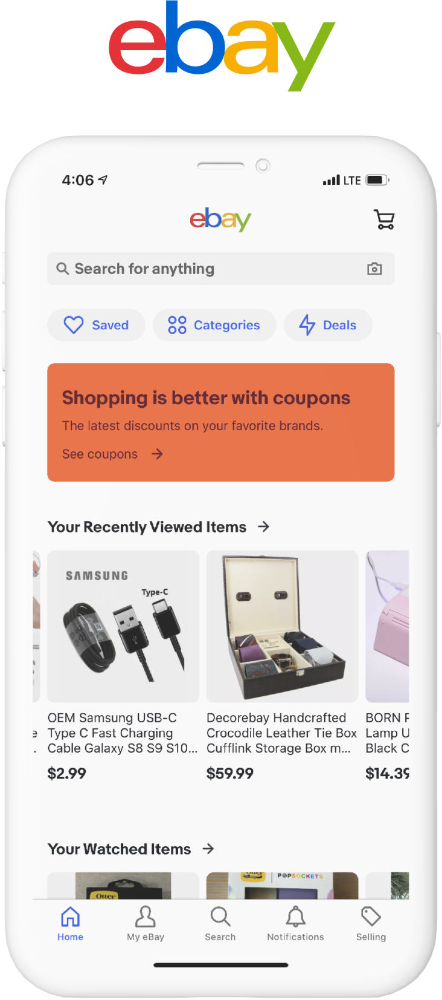
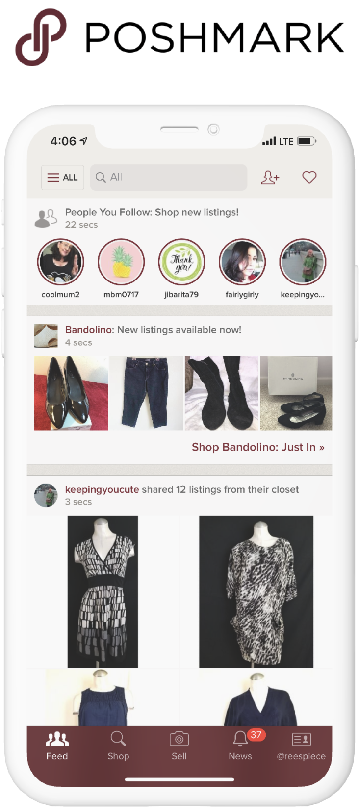
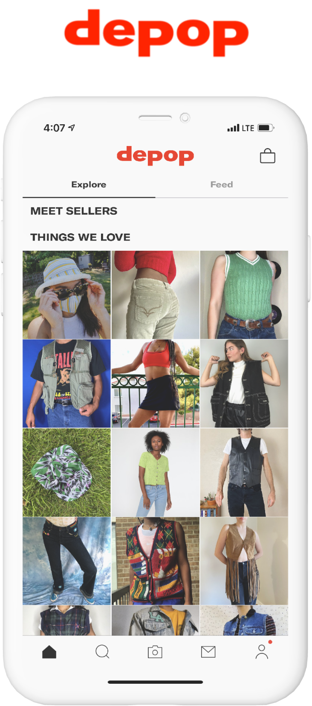
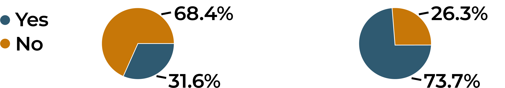
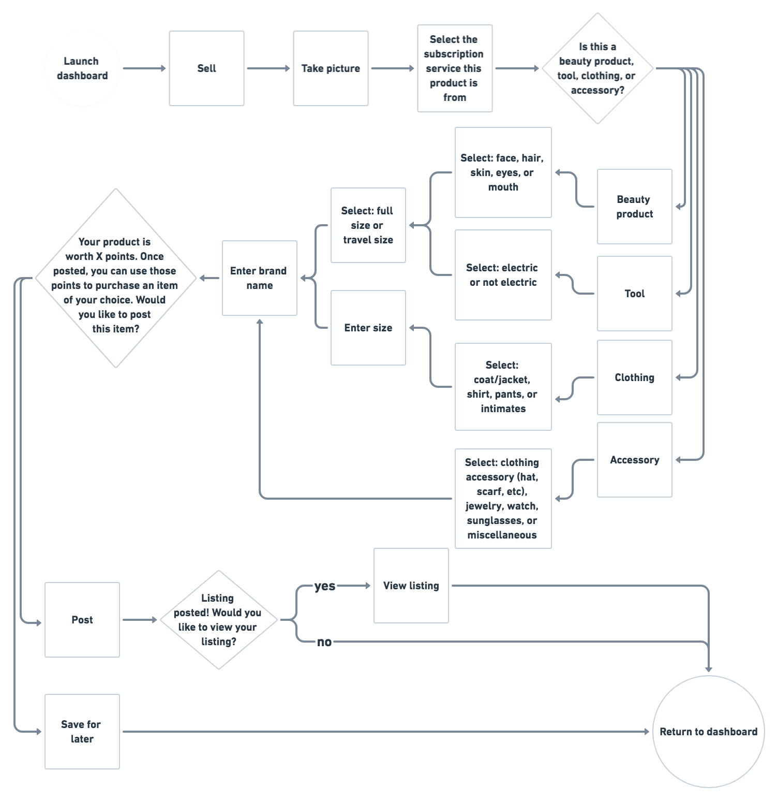
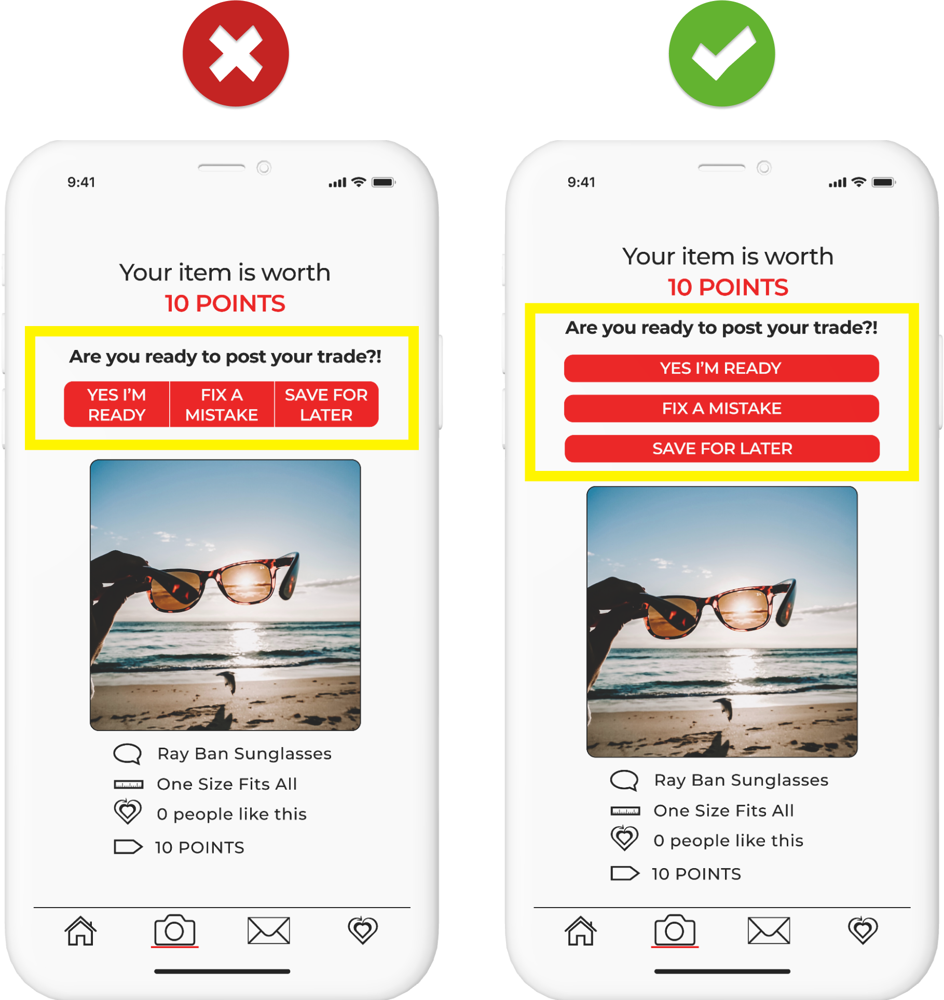
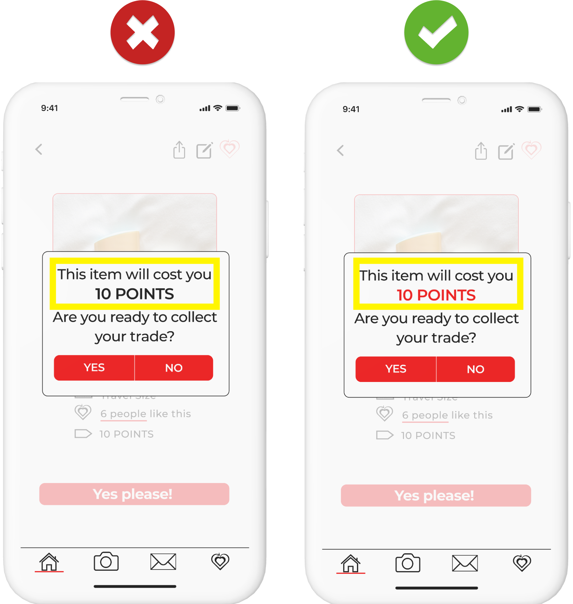
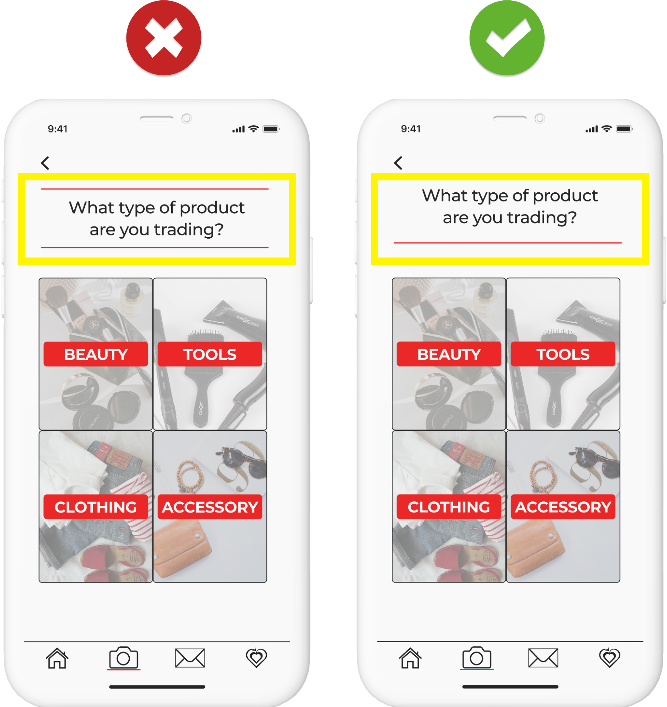

An online marketplace application that allows Subscribtion Users to trade their unwanted merchandice
Summary
PointBox is an online marketplace designed to give subscription users a platform to trade their unwanted merchandise. Since it’s based on the principle of trading, it should be no surprise that this service comes at no extra cost to the user.
Problem
Subscription services seem like the best idea at first. They’re affordable, they’re delivered straight to your door, and you never have to remember to place your order. But what happens when the supply starts surpassing the necessity. What do you do with all of that extra “stuff”?
Solution
That’s where PointBox comes in! For every item listed, the user will receive points that are automatically loaded into their account. Those points are then used as currency, allowing the user to obtain any item from any subscription that’s up-for-trade.
Process
Like most women I know, I’ve caved and subscribed to a beauty box or two over the years. As the months passed, I started to notice that I was receiving products faster than I was able to use them. I quickly found out I wasn’t the only one experiencing this problem…
The process I followed while creating PointBox was a combination of intuition and thorough research. I began by conducting a detailed study of user research, competitive analysis, and user personas. I took that information and created a strategy that consisted of user stories & flows, wireframes, branding, high fidelity mockups, and user testing. Based on my users’ feedback, through various iterations, I created the final product you see here today!
Competitive Analysis
I studied three of the most popular retail apps currently on the market: eBay, Poshmark, and Depop. While they all use very different listing styles, their end-goal is the same—provide users with an opportunity to sell pre-owned items. Retail-based online marketplaces are widely used but are incredibly vague as far as what their target audience is and provide an overly lenient listing style where sellers are basically free to post what they want, when they want, and for how much they want.



User Research
Conducting a survey was essential in gathering the information I would eventually need for my user stories & flows. The untapped potential to create a brand that bridges the gap between these two marketplaces became instantly clear!
70% of subscription users have since canceled their membership.
62% of previous subscribers made the decision to cancel their membership solely due to an overabundance of products.
79% of these participants continue using online marketplaces and are satisfied with that form of exchange.

User Personas
After analyzing the survey results, I proceeded to connect with two of the survey participants and conducted follow-up interviews with each of them. From there, I was able to create user personas and finally put some names to faces! Clara is a full-time mom and Susan is a career-driven individual. While their lifestyles are very different from one another, the unifying factor is simple: a lack of spare time.
User Stories & Flows
It was time to prioritize what features are most important to both new and returning users. I focused mainly on high priority tasks. However, knowing that ideas are constantly evolving, I decided to include a few medium and low priority tasks as well.
What good is a list of user stories without a demonstrated layout of operations?
With my user stories now in place, I was able to identify what functions are the most important and, with a pen and paper, began to draw rough drafts of what those processes might look like. Referencing my Competitive Analysis was an extremely useful resource, as there are generic layouts already in place for popular tasks. Because PointBox ONLY supports products from specific subscription boxes rather than an unlimited pool of resources, I quickly learned that the biggest differentiating features would be how to categorize an item being listed, and how to filter searched results. Based off of my sketches and some feedback from my client, I used Whimsical to create more refined versions of my user flows.

Branding
The best way to describe PointBox is “spread-the-love!” PointBox is an eco-friendly and community-based company who’s goal is to connect users and give them an opportunity to try and trade products without spending any extra money. Since I had defined the emotion behind my product, I was ready to create a logo that embodied those qualities. Taking my pen to paper, I worked on creating an image that portrays the idea of recycling-love, or “what goes around comes around”.
When picking my color palette, I decided that a “red” theme made sense being that it’s so closely associated with the feeling of love. I went with a red over pink because it’s more of a statement color and it appeals to a variety of personalities. The reasoning behind keeping such a limited color palette is to keep the inventory as the main focus of the app. For the logo’s name and slogan, I wanted to use two different yet complementary fonts. At first, I liked Karla for the header and Montserrat for the subheader because they are all sans-serifs fonts with even spacing and clean lines. However, when placed next to the logo, the text wasn’t bold enough. I then made the decision to change the header to Rubik and the subheader to Rounded Mplus 1c, which shared all the same “clean” qualities as my first option, but with much more weight.
Wireframes & Usability Tests
I began designing and bringing my User Flows to life. Once I felt that I had thoroughly covered all of my High Priority tasks, I used Figma to generate a digital version and performed multiple usability tests.
While mostly positive feedback was given, there were a few obstacles encountered as our test subjects navigated their way through the app. Most had difficulty identifying the ‘profile’ tab, needing a more efficient way to filter the user’s browsing options, and knowing how to categorize an item you’re listing. In response, the marker placed under the navbar was used more directly, a drop-down filter menu replaced the screen-slide, and imagery was used in the later mockups for intuitive assistance while listing an item.
Preference Tests
Once I was satisfied with the architecture of the app, it was time to add color! I referenced my style guide and took to Figma once again. While working on my High Fidelity Mockups, I started to notice that there were a few screens I wanted to perform Preference Tests on. The three screens I chose to test were: the final step when purchasing an item, the final step when listing an item, and the header layout while listing an item.
Final Step - Listing
4/5 people preferred the buttons be listed in a vertical layout over a horizontal layout, which I agreed with.

Final Step - Posting
4/5 people preferred “10 Points” in red over black, which I agreed with.

Header Layout - Listing
3/5 people preferred the double border on the header over the single line beneath it, which I disagreed with. I still felt that the single underline layout has a cleaner presence, and decided to stick with that version.

High Fidelity Mockups & Usability Test
Using my updated mockups, I performed another usability test. I was pleased to see that the changes mentioned in my wireframes translated well to the users in my new mockups- the navbar marker being placed more precisely to direct the user to their profile tab showed a 90% success rate. Based on their comments, observations, and reactions I decided to implement an ‘edit’ page when listing an item, and even more filtering options for when a user is browsing products.
Conclusion
PointBox has proven to successfully give users the opportunity to trade their unwanted subscription-based items, free of charge. Through multiple tests, drafts, and iterations, a user interface that our users found intuitive and accessible was developed.
User Surveys were extremely useful in identifying specifically what my user’s needs were, as was the Competitive Analysis which I relied heavily on when while creating my User Stories and User Flows.
Feedback, feedback, feedback! What good is an app that people don’t know how to use?!
The Usability Tests/User Research as well as the feedback I received from my ‘client’ was what I found to be the most beneficial while creating PointBox, such as the navbar marker and the additional filtering options. When testing my final version of my refined mockups, my users were all very clear on what the app’s purpose and vibe were, using words such as “clean”, “love”, “recycle”, which confirms that their experience was congruent and enjoyable!